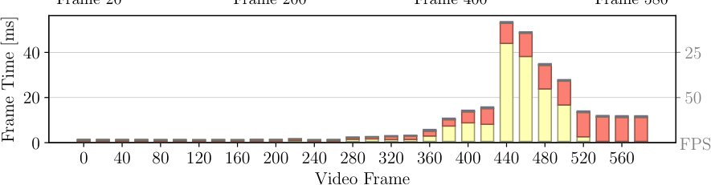
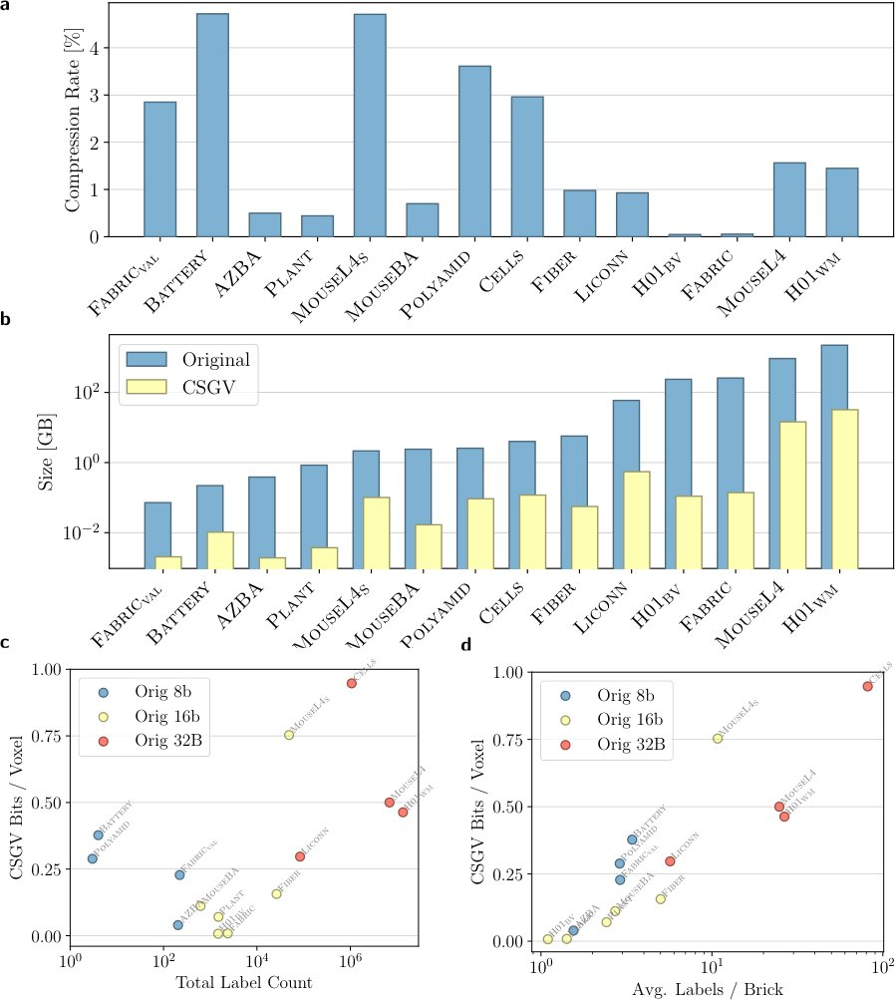
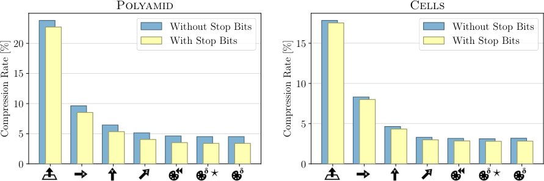
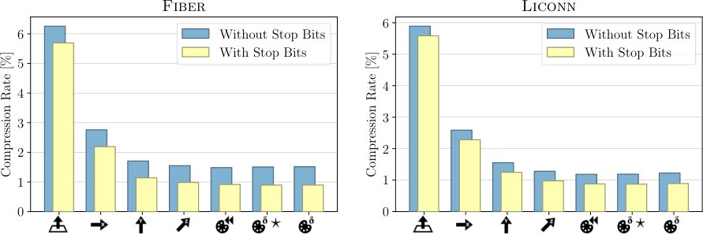
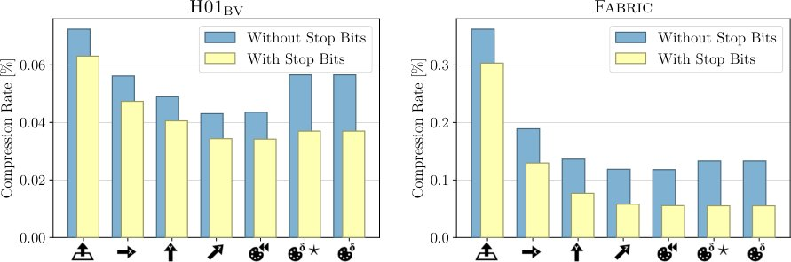

Volcanite: как визуализировать терабайты данных без суперкомпьютеров

Полное описание рисунка
Рис. 1: Визуальная аннотация. a Наше интерактивное приложение Volcanite позволяет визуально исследовать большие сегментированные объемы на обычном оборудовании, используя современное сжатие без потерь. b Наш конвейер рендеринга на базе графического процессора (GPU) с точностью до вокселя распаковывает видимые области объема в кэш для быстрого доступа. Этот конвейер обеспечивает интерактивное исследование различных конфигураций рендеринга вплоть до изучения отдельных вокселей (справа). c Рендеринг является интерактивным со скоростью в миллисекунды на отрисованный кадр. Первые кадры имеют более высокие нагрузки на распаковку, которые быстро исчезают. d С помощью Volcanite мы можем интерактивно исследовать секцию объема сегментации белого вещества коры головного мозга человека H01 размером 2,2 ТБ с трассировкой путей Full-HD со скоростью 66 кадров в секунду на обычном аппаратном обеспечении с значительно более быстрым временем до первого кадра по сравнению с другими методами. Создание неточных сеток для визуализации в Neuroglancer занимает более недели, в то время как наша предварительная обработка создает значительно меньшие кодировки без потерь менее чем за два часа на нашей системе. e Режимы затенения в Volcanite можно переключать с быстрого локального затенения на высококачественную трассировку путей с немедленной обратной связью.
Современная томография и коннектомика генерируют терабайты данных, которые сложно обрабатывать из-за их объема. Существующие методы полагаются на упрощенные сетки или распределенные системы, что скрывает детали. Volcanite предлагает прямой рендеринг вокселей с использованием Vulkan, обеспечивая высокую точность без предварительной подготовки.
Главное
- Рендеринг до 500 млрд вокселей при 100 FPS на обычном ПК.
- Прямая визуализация без трудоемкого создания 3D-сеток.
- Поддержка глобального освещения и теней для точного анализа.
Подробнее
Система Volcanite использует формат CSGV (Fast Compressed Segmentation Volumes) для эффективного хранения данных, что позволяет считывать их со скоростью гигабайтов в секунду. Рендеринг осуществляется на GPU через Vulkan-бэкенд, где данные декомпрессируются в кэш видеопамяти по требованию. Это исключает необходимость в создании промежуточных 3D-сеток, которые часто сглаживают критически важные дефекты, такие как ошибки сшивки слоев в микроскопии.
В тестах на наборе данных H01 (секция коры головного мозга объемом 2,2 ТБ) система достигла частоты 66 кадров в секунду с использованием трассировки путей. В отличие от VTK, который ограничен 32 метками и страдает от артефактов при выборке, Volcanite поддерживает миллионы меток и глобальное освещение. Препроцессинг данных занимает менее двух часов, что в разы быстрее, чем создание сеток в Neuroglancer, требующее до недели вычислений.
Ограничения
Производительность зависит от скорости чтения данных с диска, а начальные кадры требуют времени на заполнение кэша декомпрессии.
Подробный разбор статьи
Резюме
Современные методы визуализации генерируют сегментированные объемы терабайтного масштаба, где каждому вокселю присваивается метка объекта. Несмотря на высокую информативность, их огромный размер вынуждает исследователей использовать упрощенные методы: просмотр по срезам, создание аппроксимированных сеток или распределенные вычисления, что искажает пространственный контекст и скрывает дефекты на уровне вокселей. Традиционные подходы к рендерингу скалярных данных не подходят для сегментации из-за категориального характера значений и необходимости сохранения четких границ объектов.
Пояснение
Сегментация — это процесс разделения цифрового изображения на области, где каждый элемент (воксель) классифицируется как принадлежащий определенному объекту.
Представлена система Volcanite — фреймворк с открытым исходным кодом для прямого рендеринга плотных сегментированных данных на обычном оборудовании. Архитектура объединяет методы обработки данных с учетом сжатия, графический бэкенд на базе Vulkan и специализированные алгоритмы рендеринга. Это позволяет визуализировать до 0,5 триллиона вокселей с частотой 100 кадров в секунду на стандартном настольном ПК.
Важно
Volcanite обеспечивает интерактивный рендеринг терабайтных объемов без предварительного построения сеток, сохраняя точность вокселей и добавляя эффекты глобального освещения.
Осторожно
Система ориентирована на работу с уже сегментированными данными и не заменяет этапы первичной обработки или сегментации.
Ключевые достижения включают отказ от длительных этапов подготовки данных (мешинга) и возможность работы с конфиденциальными данными локально. Проект предоставляет ученым инструмент для интерактивного анализа, превращая «теравоксельные» поля меток в наглядное доказательство для проверки гипотез.
Результаты
Сегментированные объемы представляют собой 3D-сетки, где каждому элементу (вокселю) присвоена метка объекта или экземпляра: V: N³ → N. Такие области, обычно непрерывные, сегментируют пространство, например, на отдельные нейроны в коннектоме. Мы представляем Volcanite — инструмент для рендеринга сегментированных объемов.
Новая интегрированная среда рендеринга сегментированных объемов
На Рис. 1 показан рабочий процесс визуализации с помощью Volcanite. Сначала система сжимает объем в формат Fast Compressed Segmentation Volumes (CSGV), который на текущий момент является наиболее эффективным методом сжатия без потерь. Скорость сжатия ограничена чтением данных с диска (Таблица A1), при этом пропускная способность кодирования достигает гигабайт в секунду. Весь процесс визуализации, за исключением потоковой передачи деталей, полностью реализован на GPU (Рис. 1b). Закодированные CSGV-данные хранятся в видеопамяти (VRAM), а видимые области распаковываются по требованию в кэш. Графическое приложение Volcanite (Рис. 1a) позволяет интерактивно исследовать данные с частотой кадров в миллисекундах (Рис. 1c).
Полное описание рисунка
Рис. 1: Визуальная аннотация. a Наше интерактивное приложение Volcanite позволяет визуально исследовать большие сегментированные объемы на обычном оборудовании, используя современное сжатие без потерь. b Наш конвейер рендеринга на базе графического процессора (GPU) с точностью до вокселя распаковывает видимые области объема в кэш для быстрого доступа. Этот конвейер обеспечивает интерактивное исследование различных конфигураций рендеринга вплоть до изучения отдельных вокселей (справа). c Рендеринг является интерактивным со скоростью в миллисекунды на отрисованный кадр. Первые кадры имеют более высокие нагрузки на распаковку, которые быстро исчезают. d С помощью Volcanite мы можем интерактивно исследовать секцию объема сегментации белого вещества коры головного мозга человека H01 размером 2,2 ТБ с трассировкой путей Full-HD со скоростью 66 кадров в секунду на обычном аппаратном обеспечении с значительно более быстрым временем до первого кадра по сравнению с другими методами. Создание неточных сеток для визуализации в Neuroglancer занимает более недели, в то время как наша предварительная обработка создает значительно меньшие кодировки без потерь менее чем за два часа на нашей системе. e Режимы затенения в Volcanite можно переключать с быстрого локального затенения на высококачественную трассировку путей с немедленной обратной связью.
Важно
Volcanite обеспечивает интерактивный рендеринг сегментированных объемов без потерь, храня данные в VRAM и используя формат CSGV для быстрой визуализации.
В отличие от других инструментов, которые отображают большие объемы только в виде 2D-срезов или упрощенных 3D-сеток, Volcanite визуализирует данные «как есть», сохраняя доступ к каждому вокселю. Рендеринг высокого качества доступен как в интерактивном режиме, так и через интерфейс командной строки (CLI), что удобно для пакетной обработки или удаленного выполнения. Видео A1 демонстрирует офлайн-рендеринг объема Mouse L4, а Видео A2 — интерактивное исследование набора данных Cells.
Научные инсайты через рендеринг сегментированных объемов
На Рис. 2d представлен 3D-рендер сегментированных кровеносных сосудов мозга мыши. Volcanite оказался критически важным для диагностики ошибок сшивания 2D-микроскопических срезов. Благодаря воксельной точности, любые рассогласования видны как явные разрывы сосудов. В Neuroglancer эти ошибки менее заметны из-за упрощения мешей (параметры Igneous), которое сглаживает детали и может полностью удалять мелкие артефакты. Отсутствие глобального освещения в других инструментах также снижает пространственное восприятие. Volcanite позволяет работать с наборами данных объемом до 163 ГБ (1 бит/воксель), тогда как аналоги, такие как ParaView, не справляются с такими масштабами.

Пояснение
Меши — это аппроксимация поверхности объекта в виде сетки из треугольников, которая требует упрощения для снижения веса файла, в отличие от воксельного представления.
Эффективный редактор материалов сегментированных объемов
Функции передачи (transfer functions) в визуализации объемов сопоставляют значения данных с оптическими свойствами, такими как цвет и прозрачность. Существующие интерфейсы часто ограничены 32 метками (например, в VTK/ParaView). Volcanite позволяет сопоставлять номинальные метки l \in N с вторичными атрибутами A: l o (a0, ..., aN-1) \in RN, что дает возможность визуализировать, например, плотность питательных веществ в клетках (Рис. 4c).

Полное описание рисунка
Рис. 4: a Пример назначения цветов вокселям. Метки шести вокселей отображаются на два атрибута (возраст и тип) каждый. Первый материал, для которого атрибут фильтра попадает в указанный диапазон, назначается вокселю. Другой диапазон атрибутов может быть использован для назначения цветов из цветовой карты. b Объемы предварительно обрабатываются для хранения последовательных значений ID для эффективного отображения вокселей на атрибуты в памяти. d Редактор функции передачи задает материалы затенения на основе интервалов атрибутов меток. Для каждого материала интервал атрибутов фильтра определяет, для каких меток вокселей он актуален. Для этих меток значения свойства атрибута могут быть отображены в разные цвета. c Рендеринг клеток с тремя материалами: кровеносные сосуды красным цветом, плотность питательных веществ опухолевых клеток отображена с помощью цветовой карты viridis, внеклеточный матрикс (ECM) вырезан серым цветом.
Коллекция сегментированных объемов для оценки визуализации
Мы представляем набор данных для бенчмаркинга, охватывающий широкий спектр областей: от анализа растений и клеточных симуляций до композитных материалов и нейробиологии (Рис. 5a). Размеры варьируются от 72 МБ (8-бит, Fabric) до более 2 ТБ (32-бит, H01 human cortex).

Полное описание рисунка
Рис. 5: a Наша коллекция сегментированных объемов с различными свойствами для оценки визуализаций. Хотя анализ коннектома (CONN) является основным приложением, многие области используют сегментированные объемы. b Наш формат CSGV сжимает сегментированные объемы как набор кодировок блоков. Каждый блок кодируется независимым потоком операций, которые реконструируют его в форме сетки с несколькими разрешениями. Малые коды операций предписывают узлам копировать свою метку от соседнего или родительского узла сетки, или из палитры 32-битных меток блока. c Это значительно снижает потребление памяти наборами данных, требуя в среднем значительно меньше 1 бита на воксель (бит/воксель). Volcanite использует это для хранения объемов размером в ТБ в видеопамяти GPU для полностью основанного на GPU конвейера визуализации. Кодирование уровня детализации (LOD) самого высокого качества может быть отделено в CSGV для потоковой передачи на GPU только по требованию во время рендеринга. Относительный размер этого уровня детализации LOD указан как Detail%.
Сжатие сегментированных объемов CSGV
Конвейер рендеринга Volcanite полностью работает на GPU, используя формат сжатия CSGV. Как показано на Рис. 5c, метод обеспечивает сжатие без потерь, что позволяет обрабатывать терабайтные объемы данных на обычном графическом процессоре с ограниченным объемом видеопамяти (VRAM). Эффективность CSGV слабо зависит от общего количества меток в наборе данных (например, H01WM содержит более 13 миллионов меток), а определяется локальной плотностью меток в блоках данных. Сжатие менее эффективно для 8- или 16-битных данных, так как они изначально упакованы плотнее, чем 32-битные (Рис. 5c). Несмотря на затраты времени на сжатие, препроцессинг Volcanite значительно быстрее, чем в VTK или Neuroglancer, при меньших размерах хранимых данных (Рис. 3c) и минимальном времени до первого кадра (TTFF, Таблица A1). В отличие от Neuroglancer, который для экономии места хранит лишь аппроксимации сеток, CSGV обеспечивает сжатие без потерь.

Полное описание рисунка
Рис. 3: a Время кадров для воксельного рендеринга с помощью Volcanite (синий) и VTK (желтый) с локальным затенением от фиксированной камеры (меньше — лучше). Большие данные не могут быть отрисованы из-за ограничений памяти. Время кадров для Neuroglancer недоступно. b AZBA, отрисованный с совпадающими перспективами и простым локальным затенением, как в a, в Volcanite и VTK, и в аналогичной конфигурации в Neuroglancer. Поскольку прямой объемный рендеринг сегментации VTK и Neuroglancer поддерживают только локальное затенение, мы сравниваем его с локальным затенением Volcanite в измерениях производительности, даже несмотря на то, что Volcanite поддерживает тени и непрямое освещение. c Даже без вторичного сжатия gzip, применяемого для Neuroglancer, Volcanite хранит наименьший объем данных и имеет самые короткие времена предварительной обработки в целом.
Важно
CSGV обеспечивает сжатие без потерь, позволяя визуализировать терабайтные объемы на стандартных GPU за счет потоковой передачи уровней детализации (LOD).
Пояснение
LOD (Level of Detail) — это метод оптимизации, при котором для объектов, находящихся дальше от камеры или требующих меньшей точности, используются упрощенные версии данных, что экономит ресурсы GPU.
CSGV кодирует многоуровневые блоки объема как последовательные потоки операций копирования меток (Рис. 5b). Самый детальный LOD (занимающий 45–68% общего объема) передается на GPU по требованию. Каждый узел сетки содержит стоп-бит, позволяющий пропускать однородные дочерние узлы. Если метку нельзя скопировать из соседнего узла, она считывается из палитры блока. Для оптимизации мы заменили старую операцию ссылок на предыдущие записи палитры (с ограничением δ ≤ 16) на новый вариант с неограниченным δ, что позволяет создавать оптимальные длины палитр без дубликатов (Рис. A2b).
Производительность рендеринга изображений и видео
На Рис. 6b представлены временные показатели рендеринга H01WM с тенями и статичной камерой. Volcanite использует прогрессивный рендеринг: качество изображения улучшается с накоплением кадров за счет сглаживания и увеличения числа выборок Монте-Карло. Система чередует этапы рендеринга и декомпрессии, декодируя только те блоки, которые видны в кадре, с таким уровнем детализации (LOD), чтобы один воксель соответствовал примерно одному пикселю на экране (Рис. 1b). Для малых наборов данных декодируются почти все блоки, тогда как для крупных (например, MouseL4, H01) чаще используются более грубые LOD, что повышает скорость. Время отрисовки кадра стабилизируется в диапазоне 2–29 мс. По сравнению с VTK, использующим алгоритмы ray marching, Volcanite показывает значительно более высокую производительность (Рис. 3a). При движении камеры (Рис. 6c) нагрузка на декомпрессию остается постоянной, обеспечивая интерактивную частоту кадров во всех сценариях.

Полное описание рисунка
Рис. 6: a Конвейер рендеринга Volcanite. Каждый этап представляет собой отдельную отправку шейдера. Управление кэшем блоков разделено на несколько этапов (ср. потоковая передача атласа затенения (52) и (60)): Request освобождает области кэша больше не запрашиваемых блоков в стеки свободных LOD. Provision выделяет новые элементы из конца буфера кэша, если стека свободных недостаточно для выполнения всех запросов блоков. Assign назначает недавно запрошенные блоки в свободные области кэша, после чего Decode распаковывает их в кэш. Render выполняет один поток трассировки лучей на пиксель, обращаясь к кэшированным блокам для составления цветов, и запрашивает все видимые блоки. Resolve многократно выполняет наш фильтр A-trous для унифицированного шумоподавления и апсемплинга. b Время кадров для рендеринга объема Mouse L4 размером 927 ГБ (сырые данные) с неподвижной камерой на 16 ГБ GPU. Начальная потребность в распаковке высока, так как кэши изначально пусты. Более поздние кадры доминируют за счет рендеринга. c Время кадров для анимации (камера вращается вокруг и приближается к Mouse L4) с тенями. Более поздние кадры обращаются к данным в более высоком разрешении, что приводит к более затратной распаковке и рендерингу.
Осторожно
Приведенные показатели производительности зависят от аппаратного обеспечения и специфики сцены; при резкой смене ракурса возможны кратковременные пиковые нагрузки на декодер.
Режимы затенения Volcanite
Система Volcanite поддерживает четыре режима затенения (Рис. 1e), варьирующихся от простой локальной модели отражения до полноценного глобального освещения с использованием трассировки путей (path tracing). Как показано на Рис. A7c, использование теней и окклюзии окружения (ambient occlusion) значительно улучшает восприятие пространственных структур. Хотя трассировка путей обеспечивает наивысшее визуальное качество, время рендеринга возрастает до 5,5 раз (Таблица A2). При глубоком прослеживании путей (Рис. A7a) система обращается к большему числу блоков данных. Даже при неподвижной камере случайные смещения лучей для сглаживания и вторичные лучи требуют обновления данных в каждом кадре. Переключение между режимами происходит мгновенно, что позволяет гибко выбирать баланс между скоростью исследования и качеством визуализации (Видео A2). В отличие от инструментов вроде Neuroglancer или VTK/ParaView, которые ограничены локальным затенением (Рис. 2a, 3b), Volcanite обеспечивает более глубокое пространственное восприятие.
Важно
Трассировка путей дает наилучшее качество, но увеличивает время рендеринга в 5,5 раз по сравнению с базовыми методами.
Конвейер рендеринга на базе GPU
Конвейер рендеринга (Рис. 6a) полностью реализован на GPU, что исключает синхронизацию с CPU внутри кадра и минимизирует задержки. Процесс кэширования включает четыре стадии: запрос (Request), выделение памяти (Provision), назначение блоков (Assign) и параллельную декомпрессию (Decompress). Стадия рендеринга (Render) вычисляет перенос света с использованием ray marching через воксельную сетку (Рис. 1b, A7a). Постобработка включает шумоподавление и апсемплинг. Поскольку весь объем данных хранится в видеопамяти (VRAM), необходимость потоковой передачи данных между CPU и GPU практически отсутствует. Управление кэшем использует атомарные операции и практически не влияет на время формирования кадра, даже при работе с терабайтными массивами (Рис. 6b, 6c). Основная нагрузка приходится на этапы декомпрессии и рендеринга. В отличие от VTK, который испытывает трудности с интерактивностью при визуализации больших объемов, или Neuroglancer с его серверной архитектурой, конвейер Volcanite обеспечивает минимальную задержку при взаимодействии.
Пояснение
Ray marching — метод рендеринга объемных данных, при котором луч проходит через воксельную сетку, накапливая значения плотности или цвета.
Таблица 1.


Комбинированный фильтр апсемплинга и шумоподавления
Производительность постобработки зависит от интерполяции пикселей. При малом количестве выборок шум удаляется путем смешивания с соседними точками (Рис. A1f). Опциональный субсемплинг (рендеринг 1/4, 1/16 или 1/64 пикселей) ускоряет процесс, а пропуски заполняются данными ближайших соседей (Рис. A1e). Мы модифицировали фильтр «à-trous» [16]: вместо хранения промежуточных результатов мы накапливаем цвета непосредственно в буферах (Denoise A/B), что снижает потребление памяти. Апсемплинг интегрирован в процесс шумоподавления: нерендеренные пиксели получают значения от ближайших соседей. Мы оптимизировали веса фильтрации для сегментированных объемов, используя специализированную структуру G-буфера (Рис. A1b), аналогичную билатеральной фильтрации. Метод работает быстро (Рис. A1d) при минимальных затратах памяти (три текстуры размером с изображение) и обеспечивает высокое качество при движении камеры. При статичном положении камеры фильтрация постепенно сходит на нет, обеспечивая несмещенное изображение.
Осторожно
При использовании субсемплинга возможны временные артефакты, которые устраняются при накоплении достаточного количества выборок.
Оптимизация использования видеопамяти (GPU)
На рис. A2d представлены данные об общем потреблении видеопамяти (VRAM) при рендеринге фрагментов с высокой детализацией. При работе с небольшими объемами данных основную часть VRAM занимает кэш-память, что обусловлено высокой степенью сжатия CSGV. Однако для крупных массивов данных даже сжатый объем приближается к аппаратным ограничениям. Благодаря внедренным методам оптимизации, процесс рендеринга укладывается в лимит 16 GiB VRAM, установленный для нашей системы. В частности, для набора данных H01WM потоковая передача данных с минимальным уровнем детализации (LOD) позволяет сократить объем памяти, занимаемый CSGV, на 65,7%.
Важно
Оптимизация позволила снизить потребление VRAM на 65,7% для H01WM, обеспечивая работу в пределах 16 GiB даже для крупных наборов данных.
Распаковка блоков в упакованный палитровый формат позволяет увеличить эффективный объем кэша при том же количестве вокселей за счет коэффициента упаковки (рис. A2a). В этом режиме кэш хранит упакованные индексы палитр блоков, доступные напрямую из кодировок, что кратно увеличивает полезную емкость кэша (см. «Packing» на рис. A2d и данные VRAM в табл. A3). Если объема кэш-буфера недостаточно для размещения всех необходимых блоков, система автоматически ограничивает запросы к блокам подмножеством пикселей экрана (рис. A2c). Хотя это требует большего количества кадров для получения финального изображения, такой подход предотвращает «блокировку кэша», при которой отдельные области экрана занимают весь объем памяти, не освобождая блоки.
Пояснение
Блокировка кэша (cache deadlock) — ситуация, когда все ресурсы памяти заняты данными, которые постоянно требуются для отрисовки, из-за чего новые данные не могут быть загружены.
Volcanite обеспечивает рендеринг терабайтных (TB) данных с мгновенным откликом и высоким качеством. В отличие от других воксельных 3D-рендереров, таких как VTK, которые требуют хранения всех данных в VRAM (рис. 3a), наш метод позволяет проводить интерактивный анализ крупномасштабных сегментированных объемов на обычном оборудовании, что критически важно для проверки научных гипотез.
Обсуждение
Преимущества метода Volcanite
Volcanite предлагает принципиально новый подход к визуализации плотных сегментаций, рассматривая их как категориальные данные, чувствительные к границам вокселей, а не как скалярные поля или предварительно рассчитанные поверхности. Это позволяет осуществлять интерактивный рендеринг объемов теравоксельного масштаба на обычном оборудовании, сохраняя точность на уровне отдельных вокселей. Система исключает необходимость генерации мешей, что сокращает время от получения результатов сегментации до их визуального анализа. Использование единого формата CSGV (Categorical Segmentation Grid Volume) обеспечивает сжатие без потерь и одновременно служит структурой ускорения для рендеринга, минимизируя затраты на конвертацию данных.
Важно
Volcanite сокращает путь от сегментации к визуализации, позволяя работать с теравоксельными объемами на стандартных ПК без генерации мешей.
Пояснение
CSGV — это формат представления данных, который хранит метки сегментации как воксели, сохраняя их категориальную природу и границы, что критично для анализа сложных структур.
В задачах с высокой плотностью объектов, таких как нейронные сети или сосудистые системы, рендеринг с точностью до вокселя и использование глобального освещения позволяют выявлять ошибки сшивки и дефекты сегментации, которые часто скрыты в срезах или упрощенных 3D-моделях. Возможность локальной работы с данными упрощает обмен результатами и анализ конфиденциальной информации, так как исследователям не требуется удаленная инфраструктура. Метод универсален и применим к данным любого масштаба — от нескольких меток до миллионов объектов, независимо от области исследования.
Сравнение с существующими методами
По сравнению с традиционными инструментами, Volcanite оптимизирует баланс между масштабом, точностью и скоростью итераций. Просмотрщики на основе срезов точны, но лишены 3D-контекста, а методы на основе мешей требуют сложной предобработки, которая может искажать мелкие детали. Системы потоковой передачи данных незаменимы для петабайтных наборов, но часто ограничивают область обзора или используют аппроксимации. Volcanite дополняет их, обеспечивая высокоточный осмотр выбранных регионов с быстрым локальным откликом.
Осторожно
Текущая реализация ограничена теравоксельным диапазоном; для работы с петабайтными данными потребуется интеграция механизмов потоковой передачи из CPU или удаленных серверов.
Текущая версия системы эффективно обрабатывает теравоксельные объемы, что покрывает большинство современных биологических реконструкций. Дальнейшее развитие системы предполагает внедрение кэширования на GPU и динамической подгрузки данных, что позволит сохранить главное преимущество — прямое взаимодействие с воксельными сегментациями без потери точности.
Методы
Настройка среды оценки
Производительность рендеринга тестировалась на стандартном аппаратном обеспечении: процессор AMD Ryzen 7 5800X, 48 ГБ оперативной памяти DDR4 и видеокарта RTX 4070 Ti Super с 16 ГБ видеопамяти (VRAM). Система работала на Ubuntu 24.04 с фиксированной частотой графического процессора. Входные данные считывались с NVMe-накопителя Lexar NM790 4 ТБ, а результаты сохранялись на Samsung EVO 970 1 ТБ. Для воспроизводимости предоставляются Python-скрипты для загрузки данных, запуска Volcanite в headless-режиме и автоматической генерации графиков.
Параметры сжатия и рендеринга
Базовый размер блока CSGV установлен на b = 32, однако для крупных наборов данных (MouseL4, H01BV, H01WM, Fabric) используется b = 64. Для датасетов Fiber и Polyamid, а также указанных выше, применяется метод «палетизации кэша» (декомпрессия вокселей в компактный формат) для оптимизации работы с памятью. Поскольку сжатый объем H01WM превышает доступный объем VRAM, для него реализована потоковая передача блоков самого высокого уровня детализации (LOD) по требованию. Для наборов Cells, MouseL4S, MouseL4, Liconn и H01WM включены неограниченные обратные ссылки палитры, для остальных — отключены.
Пояснение
Палетизация кэша — это метод сжатия данных, при котором повторяющиеся значения вокселей заменяются ссылками на палитру, что позволяет экономить видеопамять при работе с большими объемами.
Все изображения рендерятся в разрешении 1920×1080 с одним лучом на пиксель. Оценка качества включает 1024 кадра со статической камерой и временным сглаживанием (temporal supersampling), а видеооценка — 600 кадров с движением камеры вокруг фокуса.
Сравнение с VTK и Neuroglancer
Сравнение проводилось с VTK v9.5.0. Поскольку VTK ориентирован на полутоновые объемы, для сегментированных данных используется либо поверхностная визуализация (меши), либо воксельный рендеринг с ограничением до 32 категориальных меток. Для плотно размеченных объемов мы использовали GPU-рендеринг VTK, транслируя конфигурации Volcanite в функции передачи прозрачности (transfer functions). При этом VTK настраивался на локальное затенение с шагом луча 0,5 вокселя. Для Neuroglancer данные конвертировались в формат precomputed с размером чанка 64×64×64. Меши вычислялись параллельно через Igneous с упрощением через квадратичный коллапс ребер. Ввиду клиент-серверной архитектуры Neuroglancer, где данные подгружаются потоково, замеры времени кадра для него не проводились.
Сжатие сегментированных объемов
Ключевым инструментом визуализатора для работы с крупномасштабными сегментированными объемами (V: N³ → N) на одиночных GPU является сжатие данных без потерь. Поскольку визуализация на GPU ограничена объемом памяти, мы используем метод CSGV с многоуровневым кодированием по блокам. Мы модифицировали оригинальный алгоритм, добавив возможность отключения операций, кроме базовой вставки и чтения палитры меток. Например, отказ от обратных ссылок (back references) в ряде случаев повышает коэффициент сжатия, так как снижает количество дубликатов в палитре ценой увеличения потока операций.
Пояснение
Обратные ссылки — это механизм в сжатии данных, позволяющий заменить повторяющиеся значения ссылкой на их предыдущее вхождение, что экономит место, но усложняет декодирование.
Для оптимизации мы внедрили обратные ссылки произвольной длины. После кода операции считывается 4-битный элемент: 3 младших бита содержат часть значения δ, а последний бит указывает на наличие следующего элемента. Значение δ обновляется по формуле δ ≤ftarrow (δ \ll 3) \mid ( extentry \& 1112). Это позволяет кодировать произвольные расстояния, устраняя дубликаты 32-битных меток. Для блока 64³ теоретический максимум составляет 7 элементов по 4 бита (28 бит), что эффективнее вставки 32-битного дубликата. Сжатие выполняется на CPU с использованием OpenMP.
Рендеринг в Volcanite
Сжатый объем загружается в память GPU, где видимые области декодируются по требованию. Рендеринг осуществляется методом трассировки лучей (ray marching) с шагом в один воксель. Для каждого пикселя луч проходит через объем, считывая метку вокселя (Рис. A7a). Материалы затенения определяются на основе меток для формирования финального цвета (Рис. 4a).
Режимы затенения
Режим затенения определяет, будут ли трассироваться отраженные лучи после столкновения с поверхностью. Расчет базируется на уравнении рендеринга: Lo(x, \omegao) = Le(x, \omegao) + \int\Omega+ f(x, \omegai, \omegao) Li(x, \omegai) \cos hetai d\omegai
Режимы (от быстрого к медленному): 1. Simple Local Shading: предполагает постоянную входящую радиацию L_i с одного направления ω_l. Дополнительные лучи не трассируются. 2. One Shadow Ray: аналогичен первому, но пускает один луч к источнику света для проверки затенения. 3. Ambient Occlusion: пускает один луч в случайном направлении \Omega+ для аппроксимации затенения окружающими объектами. 4. Path Tracing: оценивает полное уравнение рендеринга методом Монте-Карло, учитывая непрямое освещение. Рекурсия завершается при выходе луча за пределы объема или при достижении порога глубины пути.
Прозрачность
В отличие от сеточных методов 3D-сегментации, наш воксельный рендеринг всегда обходит области и поверхности в строгом порядке: от ближайшей к камере до самой дальней. Это позволяет легко интегрировать полупрозрачность, несмотря на некоммутативность композиции полупрозрачных поверхностей (см. Mouse BA на Рис. A6). Пользователь назначает коэффициент непрозрачности σ для каждого типа меток. При прохождении луча через полупрозрачный материал его направление не меняется, но к накопленной яркости добавляется вклад модели Ламберта, а пропускная способность луча уменьшается на σ, что приводит к перекрытию последующих поверхностей.
Пояснение
Метод Ламберта — это модель освещения, при которой яркость поверхности не зависит от угла обзора, так как свет рассеивается равномерно во всех направлениях.
Мы протестировали модель поглощения-излучения для послойно-однородных объемов, но пришли к выводу, что использование только поверхностей дает более четкую визуализацию. В будущем планируется внедрение различных функций BRDF и улучшение модели переноса света, включая полное многократное рассеяние.
Трассировка лучей (Raymarching)
Для определения вокселей и их меток вдоль пути луча используется метод Raymarching. Рендерер подбирает уровень детализации (LOD) так, чтобы один воксель кирпича соответствовал примерно одному пикселю на плоскости изображения. Поскольку метки внутри вокселей постоянны, мы применяем многоразрядный цифровой дифференциальный анализатор (DDA). Чтобы избежать численных ошибок при работе с большими объемами, мы используем декомпозицию позиции: целочисленный вектор voxel \in \mathbbN3 хранит индекс вокселя, а вектор с плавающей запятой vpos \in \mathbbR3 — положение внутри вокселя в диапазоне [0, 1)³.
Для оптимизации работы GPU (архитектура SIMT) при масштабировании вокселей используется оператор модуля. Трассировка пути включает «русскую рулетку» для раннего завершения лучей (до 32 отскоков). Для борьбы с алиасингом (ступенчатостью) применяется временное сглаживание: субпиксельные смещения лучей дрожат на основе фильтра Блэкмана-Харриса. Поскольку в сегментированных объемах невозможно классическое Mip-mapping (фильтрация меток невозможна), мы используем иерархию CSGV, где на более грубых уровнях накапливается мода значений, а не среднее арифметическое.
Постобработка
Шум в начальных кадрах при использовании Ambient Occlusion или Path Tracing устраняется с помощью иерархического вейвлет-фильтра. Если производительность GPU ограничена, рендеринг выполняется для части пикселей, а пропущенные значения заполняются апсемплингом (Рис. A1e). Процесс реализован через конвейер вычислительных шейдеров (один поток на пиксель). Входными данными служат буферы накопления цвета и прозрачности (RGBA) и G-буфер, содержащий вспомогательную информацию для фильтрации. На финальной итерации выполняется тональная компрессия (tone mapping), коррекция яркости, контраста, гаммы и наложение фона.
Буфер геометрии (G-Buffer)
G-Buffer записывается на этапе рендеринга и содержит данные только для последнего кадра с глубиной 48 бит на пиксель. Для точки первого взаимодействия с поверхностью сохраняются следующие данные (Рис. A1b): нормаль поверхности (3 бита), ориентированная в одном из шести дискретных направлений; квантованная глубина (13 бит), вычисленная как нормализованное расстояние от поверхности до ограничивающей сферы всего набора данных (Рис. A3b); и метка точки (32 бита) для определения материала и цвета альбедо. Значения нормалей 011 указывают на отсутствие поверхности (только объемное взаимодействие), а 111 — на то, что пиксель еще не был отрендерен.
Пояснение
G-Buffer — это промежуточный буфер, хранящий геометрические свойства сцены (нормали, глубину, материалы) для каждого пикселя, что позволяет выполнять постобработку без повторного обращения к сложной геометрии.
Подавление шума (Шумоподавление)
Рендеринг накапливает максимум один сэмпл на пиксель за кадр. Используются два буфера (ping-pong), отслеживающие накопленную яркость/непрозрачность и количество сэмплов. Для подавления шума в ранних кадрах применяется фильтр «A-trous» (Рис. A1f), который размывает цвета, избегая краев. На каждой итерации i пиксель обрабатывает область 3×3 или 5×5 пикселей предыдущего результата (Рис. A1c) с шагом 2^i, что создает поле охвата 15×15 за 3 итерации (Рис. A1a). В отличие от классического подхода, здесь не используется восходящий проход, что экономит память. Итоговое значение пикселя p на итерации i+1 вычисляется как: ci+1(p) = \frac1k \sumq hi(q) · w(q, p) · ci(q). Здесь h — пространственный фильтр Гаусса (1, 2, 1)⊗(1, 2, 1), а w — весовой коэффициент, зависящий от различий в G-Buffer (нормали, глубина и цвет в пространстве HSV). Если нормали n_p и n_q не совпадают, w=0. В противном случае w = e-\langle \rhoΔ, \rhoΔ \rangle · e-/dp-dq//\phid, где \phid — размер вокселя, а \phi_\rho=8 управляет влиянием различий альбедо.
Увеличение разрешения (Апсейплинг)
Для повышения производительности разрешение рендеринга может быть снижено до 1/4, 1/16 или 1/64 от общего числа пикселей. Пропуски заполняются методом апсемплинга, интегрированным в иерархическое накопление денойзера (Рис. A1e). Для нерендеренных пикселей (нормаль 111) буферы хранят 2D-смещение до ближайшего отрендеренного соседа. На каждой итерации i ищется сосед q с расстоянием 2^i, который либо сам является отрендеренным, либо содержит ссылку на таковой. Итоговое смещение o_p обновляется как op ≤ftarrow \minlength [op, oq + (q - p)]. После оценки ядра цвет копируется из найденного соседа. Метод напоминает алгоритм Jump-Flood для диаграмм Вороного. Стратифицированная выборка гарантирует, что один пиксель рендерится на блок 2², 4² или 8², а последовательности блоков смещаются по синему шуму (Рис. A1e).
Применение фреймворка Volcanite
Помимо графического интерфейса (GUI), Volcanite поддерживает работу через CLI для автоматизации задач или на системах без графической оболочки с полным доступом ко всем параметрам (Рис. 1).
Редактор материалов и функции передачи
Правая часть графического интерфейса (Рис. 1a) содержит редактор материалов, управляющий функциями передачи для сопоставления меток (labels) с оптическими свойствами. Система использует многоуровневое отображение (Рис. 4a): материалы назначаются на основе фильтрации атрибутов по минимальному и максимальному значениям. Например, все метки с типом в диапазоне [5.2, 27] могут быть назначены левому материалу (Рис. 4d). Для каждой метки выбирается первый подходящий материал из списка. Этот материал определяет цвет, прозрачность и эмиссию. Цвета могут быть постоянными или задаваться цветовой картой [48, 69]. В последнем случае используется вторичный атрибут визуализации, независимый от фильтра (Attribute на Рис. 4d). Значения линейно отображаются на карту с возможностью ограничения (Clamp) или повторения (Repeat) диапазона (Рис. 4d), либо случайного назначения цветов (Random), что удобно для категориальных данных.
Пояснение
Функция передачи — это математическое правило, которое определяет, как числовые данные (метки) преобразуются в визуальные характеристики (цвет, прозрачность), позволяя выделять нужные структуры в объеме.
Атрибуты меток A_i: N → R хранятся в базе данных SQLite3 на стороне CPU, что позволяет создавать производные атрибуты через SQL-запросы. Всегда доступен фиктивный атрибут A₀(l) = l. Volcanite также вычисляет геометрические атрибуты (объем, площадь поверхности) для каждой метки в заданном CSGV-объеме. Атрибуты передаются на GPU как буферы чисел с плавающей запятой. Поскольку количество меток обычно на порядки меньше количества вокселей, это эффективно. Для обеспечения непрерывности индексов меток при использовании атрибутов, отличных от A₀, выполняется предварительная обработка: воксели обходятся вдоль 3D-кривой Мортона [50], а метки заменяются на возрастающие индексы. Это отображение сохраняется в базе данных для восстановления исходных меток.
Интерфейс командной строки
Volcanite поддерживает работу в headless-режиме через CLI. Командная строка позволяет детально управлять всеми функциями, включая сжатие/декомпрессию объемов и рендеринг последовательностей. CLI открывает доступ к расширенным настройкам, отсутствующим в GUI, и позволяет использовать программу на серверах без графической оболочки, интегрируя её в скрипты bash или Python через файловую систему.
Конвейер рендеринга на GPU
Volcanite реализован на C++ с использованием API Vulkan. Сжатие объемов выполняется на CPU с параллелизмом OpenMP [56], а рендеринг и декодирование — в шейдерах GLSL. Шейдеры компилируются «на лету» (JIT) для конкретного сжатого объема, что позволяет передавать параметры (размеры блоков, кэша, активные операции CSGV) как константы времени компиляции. Это исключает неиспользуемые ветки кода и оптимизирует использование регистров GPU. Рендерер использует кэш блоков (brick cache), куда распаковываются видимые данные CSGV. Управление кэшем адаптирует этапы запроса, назначения и обеспечения (streaming), назначая видимые блоки свободным ячейкам буфера (Рис. 6a). Внедрен двухэтапный процесс: разделение декомпрессии и назначения, а также многопроходный этап разрешения (denoising и upsampling через фильтр «A-trous»).
Процесс рендеринга: лучи проходят через объем, обращаясь к декодированным блокам или помечая новые как видимые. Блоки без видимых меток пропускаются. Этап запроса (request) выполняется в один поток на блок, помечая невидимые блоки и формируя стек запросов для новых блоков. В отличие от базовых методов, вычисление уровней детализации (LOD) перенесено из этапа рендеринга в этап запроса следующего кадра, что устраняет задержки и артефакты при движении камеры. Этап обеспечения (provision) проверяет наличие места в кэше; при нехватке памяти индекс в буфере увеличивается атомарно. После этого этап назначения (assign) привязывает блоки к слотам, а этап декодирования (decode) их распаковывает. В установившемся режиме время выполнения этапов, отличных от рендеринга, составляет менее 2 мс.
Управление памятью
Объемы данных сегментации часто превышают лимиты видеопамяти (VRAM) потребительских GPU. Например, объем 2048³ с 32-битными метками занимает 32 ГиБ. Для оптимизации мы используем сжатие CSGV и потоковую передачу данных с CPU на GPU. Блоки (bricks) декодируются в кэш только по запросу. Рендерер запрашивает блоки в более низком разрешении (LOD) при удалении от камеры, что уменьшает объем кэша в 8 раз на каждый уровень LOD. Тем не менее, потребление VRAM остается высоким из-за буферов сжатых данных, метаданных кэша, атрибутов меток и параметров рендеринга (см. Рис. A3c). Если объем данных превышает VRAM, размер кэша блоков принудительно сокращается, а в крайнем случае часть данных считывается напрямую из сжатого представления в минимальном LOD.
Оптимизация буферов кодирования
При коэффициентах сжатия 1–3% большинство томов CSGV помещаются в VRAM. Чтобы обойти ограничение 32-битной индексации (лимит 16 ГиБ) и лимиты API (макс. 4 ГиБ на буфер), мы распределяем блоки по нескольким буферам. Количество блоков, превышающих целевой размер, определяется как \eta, а индексы блоков отображаются в буферы как \lfloor bi / \eta \rfloor. Использование расширения Vulkan buffer device address позволяет GPU выполнять декомпрессию независимо от конкретного буфера.
Для потоковой передачи данных с CPU на GPU мы используем разделение: детализированные данные (finest LOD) хранятся отдельно (Brick Detail Encodings, Рис. A3c), а более грубые (32–55% памяти, Рис. 5c) загружаются полностью. Детализированные блоки запрашиваются через буфер Detail Requests, который считывается CPU. Асинхронный конвейер копирует данные в буфер для GPU, работая параллельно в течение нескольких кадров. Во время загрузки буфер помечается как «неконсистентный» для предотвращения ошибок доступа.
Пояснение
Паллетизация кэша — это метод сжатия данных в памяти, при котором вместо хранения полных значений меток хранятся индексы в небольшой таблице (палитре), что позволяет упаковать больше данных в тот же объем памяти.
Для экономии места мы применяем паллетизацию кэша: вместо 32-битных меток хранятся упакованные индексы палитры. Количество бит на воксель I = \lceil \log2(/P/max) \rceil. Мы храним \lfloor 32 / I \rfloor записей в 32-битном слове кэша (Рис. A2a). Это увеличивает эффективный объем кэша (Таблица A3), требуя лишь дополнительного обращения к памяти. Наш метод кодирования исключает дубликаты меток в палитрах, что повышает эффективность по сравнению с оригинальным CSGV.
Дефрагментация кэша
Регионы кэша жестко привязаны к уровню LOD, что может приводить к фрагментации. При переполнении кэша мы выполняем его полную очистку (Рис. 6a). При смене LOD, если стек свободных регионов (емкостью 1 048 576 блоков) переполнен, мы принудительно переключаем LOD без возврата региона в стек, что создает «мертвое» пространство до следующей дефрагментации.
Ограничение запросов к кирпичам (BrickRequestLimitation)
Эффективность кэширования зависит от способности системы удерживать все необходимые блоки данных (bricks) в требуемых уровнях детализации (LOD). Если кэш переполняется из-за запросов от множества лучей, возникает конфликт. Для решения этой проблемы применяется ограничение запросов: рендерер разрешает запрашивать новые блоки только для ограниченной области пикселей (зеленая зона на Рис. A2c), что концентрирует ресурсы кэша на меньшем подмножестве лучей. Блоки, требуемые для пикселей вне этой зоны, принудительно освобождаются. Механизм активируется автоматически, если разница между минимальным и максимальным количеством выборок (samples) на пиксель превышает заданный порог. Размер зоны динамически регулируется контуром обратной связи в зависимости от интенсивности накопления выборок.
Пояснение
Ограничение запросов — это метод приоритизации данных, при котором система «отсекает» менее важные запросы к памяти, чтобы гарантировать, что критически важные для текущего кадра данные всегда доступны в кэше.
На Рис. A7a показано, что количество обращений к блокам объема растет с увеличением глубины трассировки лучей. Для первичных лучей (глубина ≤ 1) эффект минимален, но для длинных путей трассировки система может запрашивать распаковку целых блоков ради одного сэмпла. По умолчанию мы ограничиваем глубину запросов до 1. Если система обращается к еще не декодированному блоку, она использует метку из самого грубого уровня LOD, не отменяя уже накопленный цвет пикселя, так как влияние такой непрямой освещенности обычно незначительно.
Генерация псевдослучайных чисел
Случайные числа определяют направления лучей и смещения для сглаживания. Поскольку кэш блоков имеет задержку в один кадр (Рис. 6a), изменение случайных чисел в следующем кадре может привести к запросу новых, еще не декодированных данных. Чтобы этого избежать, мы используем детерминированный генератор случайных чисел для каждого потока пикселей, инициализируемый количеством накопленных валидных выборок. Это гарантирует, что пиксель будет просчитывать один и тот же путь луча до тех пор, пока данные не станут доступны. Для предотвращения блокировок (deadlocks) состояние генератора принудительно меняется каждые 256 кадров. Инициализация зависит от координат пикселя согласно паттерну blue noise (32x32) для оптимизации шума. В качестве генератора используется 2D PCG-хэширование. Итоговое начальное значение (seed) для пикселя p после f кадров вычисляется как: PCG2D(blueNoise32×32(p), (28⌊f / 256⌋) ⊕ s), где ⊕ — побитовое исключающее ИЛИ.
Анализ производительности рендеринга
Исследование эффективности методов визуализации проводилось на наборе из 14 различных датасетов, включая такие объекты, как Polyamid, Fabric, MouseBA, Cells, Battery, AZBA, H01BV, H01WM, Plant, Liconn, Fiber, MouseL4S, Fabricval и MouseL4. Для каждого объекта оценивались четыре техники затенения: local (локальное), shadow (тени), ao (ambient occlusion — окклюзия окружения) и pt (path tracing — трассировка путей). Тестирование проводилось в двух режимах: для статической камеры (static camera) и для движущейся камеры (moving camera). Основными метриками выступали время отрисовки кадра (в мс) и статистические показатели (минимум, медиана, максимум).
Пояснение
Ambient Occlusion (AO) и Path Tracing (PT) — это методы глобального освещения, которые требуют значительно больше вычислительных ресурсов, чем локальное затенение, так как учитывают взаимодействие света с геометрией сцены.
Для статической камеры значения времени отрисовки варьировались от минимальных 1.2 мс (Battery, local) до пиковых 238.64 мс (H01BV, pt). В режиме движущейся камеры наблюдались более низкие показатели медианного времени, однако для сложных сцен, таких как H01BV, время отрисовки при использовании PT достигало 174.72 мс. Различия в производительности между методами затенения показывают, что переход от локального затенения к PT увеличивает нагрузку на систему в 3–10 раз в зависимости от сложности геометрии объекта.
Оптимизация кэширования и памяти
Дополнительно оценивалась эффективность использования кэша (Cache Paletting) и влияние упаковки данных (Packing Factor). Использование кэширования позволило существенно сократить объем занимаемой памяти (Cache Used [MB]). Например, для датасета Polyamid объем памяти снизился с 4134.7 МБ до 516.84 МБ при включении кэширования. Коэффициент упаковки данных варьировался от 1.68 (Battery) до 20.5 (Fiber). Количество сэмплов на пиксель (SPP) поддерживалось в диапазоне от 1014 до 1023, что обеспечивает стабильное качество изображения при различных настройках производительности.
Таблица 3. Сравнение коэффициента сжатия
| Категория | Коэффициент сжатия [%] (Без стоп-битов) | Коэффициент сжатия [%] (Со стоп-битами) |
|---|---|---|
| Fabricval | ||
| Battery |
Таблица 4. Сравнение коэффициента сжатия
| Категория | Коэффициент сжатия [%] (Без стоп-битов) | Коэффициент сжатия [%] (Со стоп-битами) |
|---|---|---|
| AZBA | ||
| Plant |
Таблица 5. Сравнение коэффициента сжатия
| Категория | Коэффициент сжатия [%] (Без стоп-битов) | Коэффициент сжатия [%] (Со стоп-битами) |
|---|---|---|
| MouseL4S | ||
| MouseBA |
Таблица S1. Время предварительной обработки Volcanite, VTK (C++ API) и Neuroglancer с размером файлов на диске
| Набор данных | Сжатие (с) | Файловый ввод/вывод (с) | Всего с вводом/выводом (с) | TTFF (с) | Размер (Direct) (ГБ) | Размер (gzip) (ГБ) |
|---|---|---|---|---|---|---|
| Volcanite | ||||||
| Fabricval | 00.1s | 01.3s | 01.4s | 06.3s | 0.002 | 0.002 |
| Battery | 00.3s | 00.8s | 01.1s | 02.0s | 0.010 | 0.010 |
| AZBA | 00.3s | 02.2s | 02.5s | 03.5s | 0.002 | 0.001 |
| Plant | 00.3s | 02.3s | 02.6s | 03.5s | 0.004 | 0.003 |
| MouseL4S | 01.7s | 07.5s | 09.2s | 10.3s | 0.101 | 0.100 |
| MouseBA | 01.1s | 11.3s | 12.4s | 17.4s | 0.017 | 0.015 |
| Polyamid | 02.9s | 09.1s | 12.0s | 13.5s | 0.093 | 0.090 |
| Cells | 01.8s | 06.3s | 08.1s | 09.1s | 0.118 | 0.116 |
| Fiber | 02.4s | 20.8s | 23.2s | 24.7s | 0.056 | 0.053 |
| H01BV | 33.0s | 5m03.6s | 5m36.6s | 5m41.5s | 0.110 | 0.069 |
| Liconn | 15.0s | 3m34.3s | 3m49.3s | 3m56.0s | 0.550 | 0.535 |
| Fabric | 2m11.3s | 13m46.7s | 15m58.0s | 16m03.1s | 0.139 | 0.117 |
| MouseL4 | 7m17.0s | 35m23.6s | 42m40.6s | 43m41.4s | 14.502 | 14.482 |
| H01WM | 19m02.8s | 1h46.1s | 1h19m49.0s | 1h24m06.4s | 32.138 | 31.831 |
| VTK | ||||||
| Fabricval | - | - | 01.5s | 03.8s | 0.072 | 0.002 |
| Battery | - | - | 02.8s | 09.5s | 0.220 | 0.016 |
| AZBA | - | - | 05.7s | 17.6s | 0.385 | 0.005 |
| Plant | - | - | 06.2s | 19.1s | 0.845 | 0.209 |
| MouseL4S | - | - | 25.7s | 58.1s | 2.147 | 0.202 |
| MouseBA | - | - | 25.0s | 1m02.1s | 2.408 | 0.049 |
| Polyamid | - | - | 32.5s | 1m49.5s | 2.569 | 0.133 |
| Cells | - | - | 24.9s | 55.7s | 4.000 | 0.248 |
| Fiber | - | - | 1m01.5s | 2m27.0s | 5.694 | 0.143 |
| Neuroglancer | Сжатие (с) | Сегментация (с) | Всего с вводом/выводом (с) | - | Размер (Direct) (ГБ) | Размер (gzip) (ГБ) |
| Fabricval | 01.4s | 04.8s | 06.2s | - | 0.014 | 0.006 |
| Battery | 02.5s | 1m06.2s | 1m08.7s | - | 0.169 | 0.093 |
| AZBA | 03.2s | 16.0s | 19.2s | - | 0.037 | 0.016 |
| Plant | 03.5s | 22.0s | 25.5s | - | 0.066 | 0.028 |
| MouseL4S | 18.8s | 5m34.8s | 5m53.5s | - | 1.213 | 0.599 |
| MouseBA | 21.0s | 2m10.2s | 2m31.3s | - | 0.337 | 0.158 |
| Polyamid | 27.3s | 9m17.3s | 9m44.6s | - | 1.395 | 0.746 |
| Cells | 24.3s | 7m18.3s | 7m42.6s | - | 3.505 | 1.740 |
| Fiber | 34.0s | 1m53.6s | 2m27.6s | - | 0.802 | 0.350 |
| H01BV | 36m01.6s | 5m16.5s | 41m18.1s | - | 2.253 | 0.151 |
| Liconn | 5m04.1s | 26m50.4s | 31m54.5s | - | 8.218 | 3.932 |
| Fabric | 38m20.0s | 10m41.4s | 49m01.4s | - | 3.663 | 0.796 |
| MouseL4 | 1h26m23.1s | 12h12m21.8s | 13h38m44.9s | - | 177.108 | 84.029 |
| H01WM | 2h47m35.5s | 7d12m25.8s | 7d3h01.3s | - | 505.080 | 230.897 |
Включая вторичное сжатие gzip. TTFF — время до первого кадра.
Таблица 2.










Полное описание рисунка
Рис. A2: Управление памятью GPU. b Операция δ имеет решающее значение для ограничения максимальных размеров палитр блоков /P/, что влияет на коэффициенты упаковки кэша. Наш новый (неограниченный) δ устраняет дубликаты палитр. c Ограничение запросов блоков позволяет только определенным пикселям (зеленые) запрашивать кэш блоков. Это предотвращает взаимные блокировки при ограниченном объеме кэша за счет концентрации ресурсов вокруг пикселя с наименьшим количеством отрисованных выборок (красный). d Использование памяти GPU при рендеринге изображения с лучами теней. Для небольших данных кэш доминирует в потреблении памяти на нашем GPU с 16 ГиБ VRAM. Для больших данных, где эффективность памяти является обязательной, наш метод значительно ограничивает потребление памяти по сравнению с размерами необработанных данных. Для Polyamid, Fiber, H01BV, Fabric, MouseL4 и H01WM мы используем нашу палитру кэша для увеличения эффективного размера кэша с помощью коэффициента упаковки. Общее потребление VRAM включает другие данные.

Полное описание рисунка
Рис. A3: a Конвейер постобработки для шумоподавления и апскейлинга накопленных кадров рендеринга. Два чередующихся буфера ping-pong содержат предыдущую (входную) и текущую (выходную) яркость RGBA (Accum.) и количество выборок (SampleCnt) на пиксель. Следующий конвейер разрешения работает с двумя чередующимися 16-битными текстурами RGBA и выходными данными G-буфера рендерера, которые остаются неизменными на протяжении всего конвейера. b В мировом пространстве набор данных масштабируется до размера 1 по своей наибольшей размерности и центрируется вокруг начала координат. Значения глубины для G-буфера вычисляются как ∥h − p∥, где p — это точка первого попадания в поверхность, спроецированная на сферу, которая охватывает единичный куб в направлении камеры. c Соответствующие буферы памяти и поток данных внутри архитектуры рендеринга. Кодировки блоков хранятся в нескольких больших буферах. Для очень больших наборов данных самое высокое разрешение блоков (детализация) передается на GPU по требованию. Во время рендеринга видимые блоки распаковываются в кэш GPU, возможно, в упакованном формате. d Конвейер CPU для создания буферов кодирования для самого высокого уровня детализации (LOD). Состояния конвейера белым цветом, процедуры синим цветом.


Полное описание рисунка
Рис. A7: a Режимы затенения оценивают перенос света вдоль различных глубин (пронумерованы) и направлений путей лучей. Локальное затенение отслеживает только лучи обзора глубины 0 (черный). Опционально отслеживаются вторичные лучи теней (желтый) к источнику света. Окружающее затенение отслеживает 1 направление в произвольных направлениях (синий). Трассировка путей оценивает полный перенос вдоль произвольных глубин (красный). Режимы затенения получают доступ к увеличивающемуся количеству блоков в этом порядке (цветные). b Время кадров для стационарного изображения H01WM объемом 2,2 ТБ. Поскольку более продвинутое затенение обращается к большему количеству объемных блоков, производительность рендеринга снижается. c Рендеринг изображения H01WM после 1024 кадров сходимости. Режимы затенения можно менять с немедленной обратной связью. Хотя локальное затенение быстрое, тени или окружающее затенение улучшают визуальное восприятие структур. Трассировка путей обеспечивает наивысшую визуальную точность, например, оценивая непрямые отскоки света от оранжевых нейронов.


Схема исследования
Препринт не проходил рецензирование. Выводы предварительные.
Источник
| Источник | Категория | Лицензия |
|---|---|---|
| arXiv | cad_parametric | arxiv |
Источники
| Источник | Ссылка |
|---|---|
| Страница препринта | arxiv.org |
| Полный текст (PDF) | arxiv.org |
| DOI | doi.org |
| Метаданные Crossref | api.crossref.org |
| Europe PMC | europepmc.org |